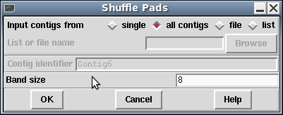

The Shuffle Pads, Remove pad Columns and Remove Contig Holes all share a common goal of tidying up sequence alignments, possibly also breaking the contig up.
This function is an implementation of the Anson and Myers "ReAligner" algorithm. It analyses multiple sequence alignments to detect locations where the number of disagreements to the consensus could be reduced by realignment of sequences, possibly also correcting the consensus in the process. For example:
Sequence1: GATTCAAAGAC Sequence2: TTCAA*GACGG Sequence3: TC*AAGAC Consensus: GATTCAAAGACGGATC
The consensus contains AAA, but the corrected alignment only has
two As:
Sequence1: GATTCAAAGAC Sequence2: TTC*AAGACGG Sequence3: TC*AAGAC Consensus: GATTC*AAGACGGATC

For speed we acknowledge that the new alignment will only deviate slightly from the old one and so a narrow "band size" is used. This paramater may be adjusted if required, but at the expense of speed.